これまでのサンプルを NuGet パッケージにしてみました
公開日：
- WebMatrix でファイルのアップロード - だるろぐ
- WebMatrix でファイルのアップロード（2） - だるろぐ
- WebMatrix でファイルのアップロード（2） の補足 - だるろぐ
- WebMatrix でファイルのアップロード（3） - FileUpload ヘルパーを使う - だるろぐ
以上の内容を NuGet パッケージ（https://nuget.org/packages/DADIU/1.1.0）にしてみました*1。記事では端折った JavaScript なんかも含まれているので*2、もし興味があればみていただければと。
インストール方法
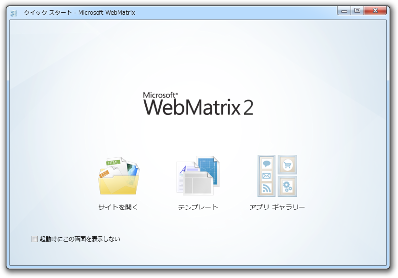
［テンプレート］ボタンを押す。
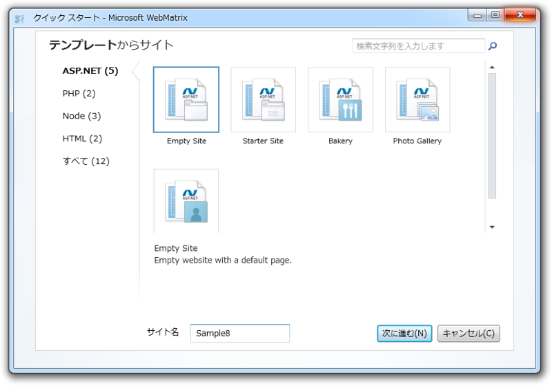
テンプレートを選択。好きなモノを選んでいいですが、試すだけなら“Empty Site”が無難ですね。
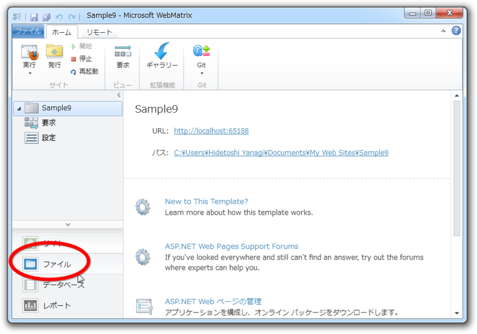
［ファイル］タブを選択。そうしないと［NuGet］ボタンが出てこないみたい*3。
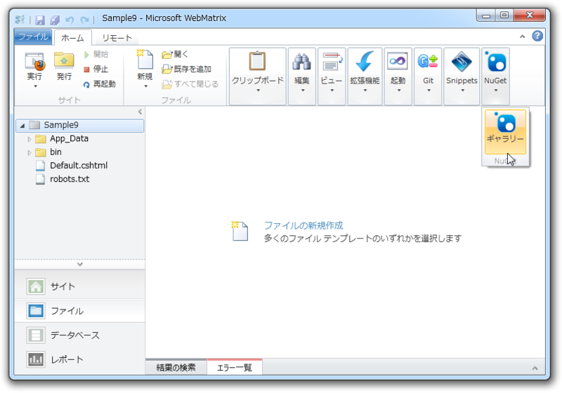
［NuGet］ボタンを押す。
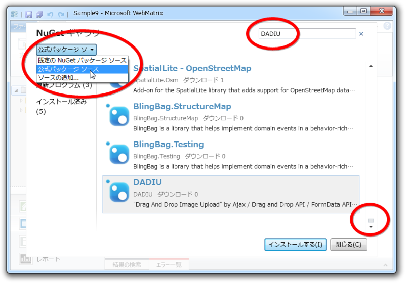
パッケージの検索。検索結果はダウンロード数順になっているのかな？ かなり下の方にスクロールしないとでてこないです。もし検索されない場合はパッケージのソースも変えてみてください。コマンドラインでインストールできる方法も用意されたらいいですね*4。
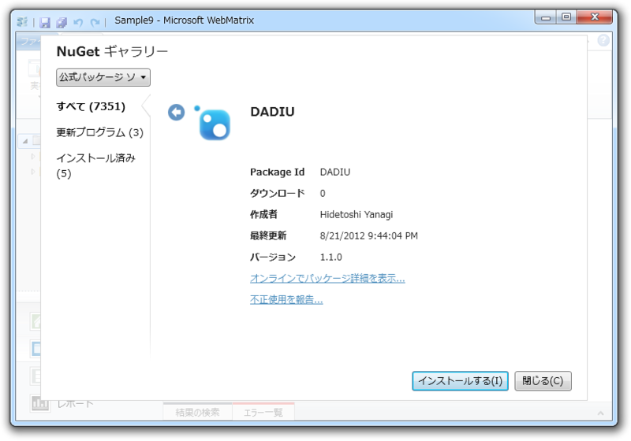
無事パッケージを発見できたらインストール。パッケージ名いいのが思いつかなかったので、頭文字を並べただけです。
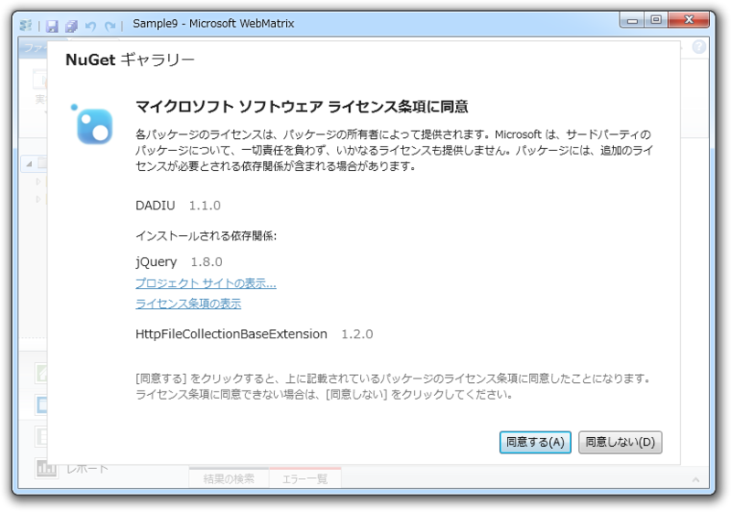
今回は依存パッケージのインストールも使ってみました（jQuery と HttpFileCollectionBaseExtension）。もしインストールされていない場合は自動で依存性が解決され、ダウンロード・セットアップされます。
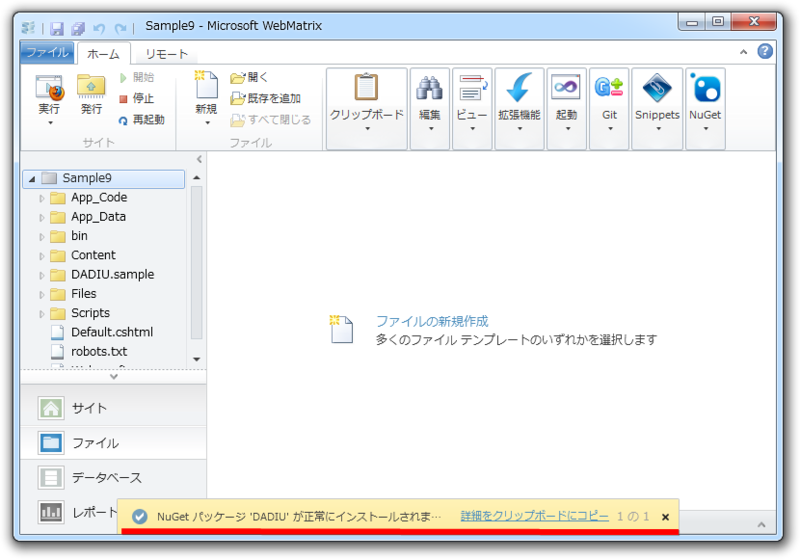
インストールが成功（するといいな）！ いろいろファイルが追加されているはずです。
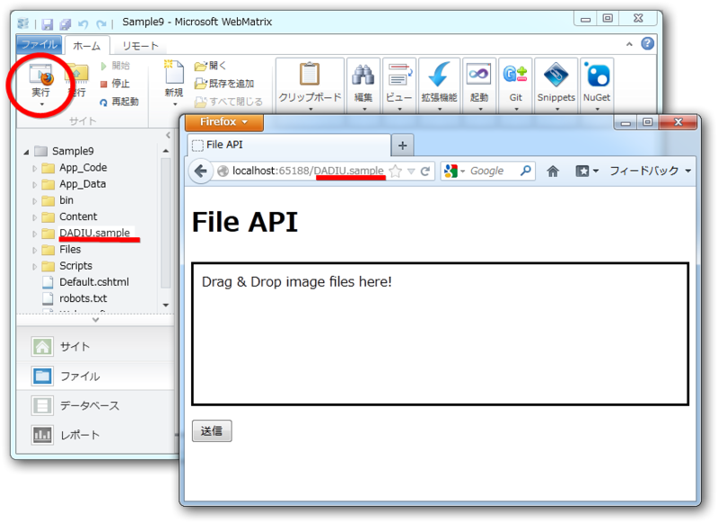
サンプルは“DADIU.sample”にあるので、ブラウザーで実行してフォルダへアクセスしてください。対応ブラウザーは Google Chrome / FireFox （Opera/IE10？）です。「WebMatrix 2」ではインストール済みのブラウザーのなかから好きなブラウザーを選んで実行できるのが便利ですねぇ。
これまでの記事のウソポイント
ぶっちゃけこのブログは結構ウソも書いています（ごめんなさい！）*5。あんまり完成度を意識してたら、アウトプットなんかできませんからね！*6 とはいえ、ほんとごめんなさい的な記述もあるので、気付いたところだけ直しておきます*7。
NuGet Package Explorer
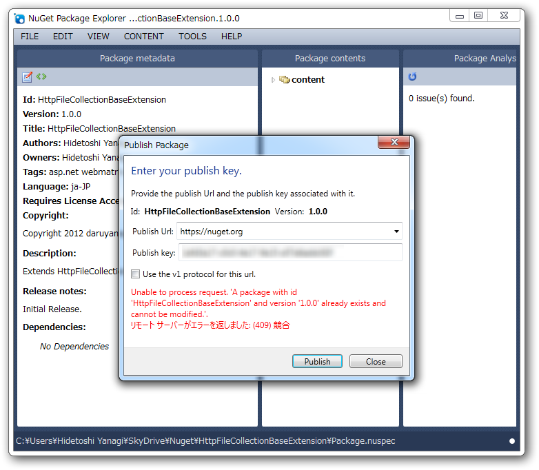
あと、公開（push）の終了がわかりづらい。まぁ、重複して公開するとエラーになる（実害はない）のでわかるのだけれど。
公開が終わったらちゃんとメッセージでてたがな！（見落とし
（･･････）というフォルダー階層にして .nuspec を開いたら、
を書いてなくてちゃんと Contentが読み込まれた。なるほど。
今回のパッケージを作るときは出てこなかった。なんでだろ。まぁ、手動で追加すればいい。
Dictionary の初期化
private Dictionary<string, string> AllowedFileType = new Dictionary<string, string>();
Dictionary ってその場で初期化できるんだね。
private Dictionary<string, string> AllowedFileType = new Dictionary<string, string>() { { "image/jpeg", "jpg" }, { "image/png" , "png" }, { "image/gif" , "gif" }, };
こっちのほうがいいや。
.NET Framework のターゲット指定
<?xml version="1.0"?> <configuration> <system.web> <compilation targetFramework="4.0" debug="false"> <codeSubDirectories> <add directoryName="Highlight"/> </codeSubDirectories> </compilation> </system.web> </configuration>
web.config.transform を少し書き換えて、 .NET 4 を利用するようにしてみたら（targetFramework="4.0"）ちゃんと動きました。ついでに、 NuSpec のタグに「.net 40」を追加して「.NET 4 用ですよ！」とわかるようにしておくと*3いいんじゃないでしょうか。
これはよくないかもしれない。
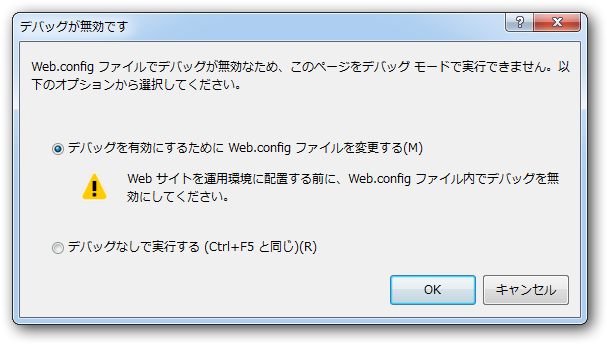
Visual Studio で開いてデバッグするとき、 compilation 要素がダブってエラーになることがあった。もっとよい作法がありそうな気がする。
App_Code フォルダのサブフォルダで cshtml を使う
でも、この方法でサブフォルダーをコンパイル対象に含めても cshtml ファイルの面倒まではみてくれないみたい……。
もしかしたらされるっぽい。前回は動かなかったのだけれど、今回試したら動作した*8。
ただ、フォルダ名が namespace として扱われるので、呼び出すための記述が長くなる。けれども、場合によってはなかなか使えるのかもしれない。